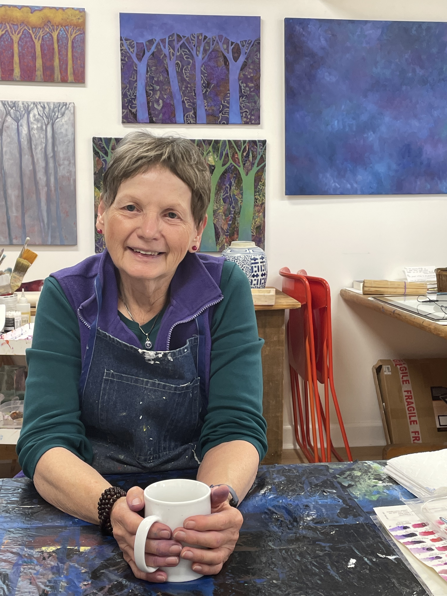
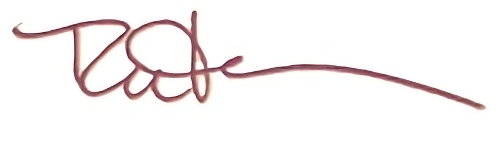

For me, making art is serious fun. Color delights me. Forms and the space between them intrigue me. Iʼm passionate about light, energy, harmony, and feeling in a painting.
I seem to be drawn to all types of art, from the figurative and the realistic to the imaginative and the abstract. There is always something new to discover. Making art allows me to
enter a world beyond the physical and temporal, a magical place where wonderful things can happen.
Many thanks to my supportive family, and the many mentors, teachers and friends who have illuminated my path.
And thanks to Zeb Kleinsorge for designing this website.
